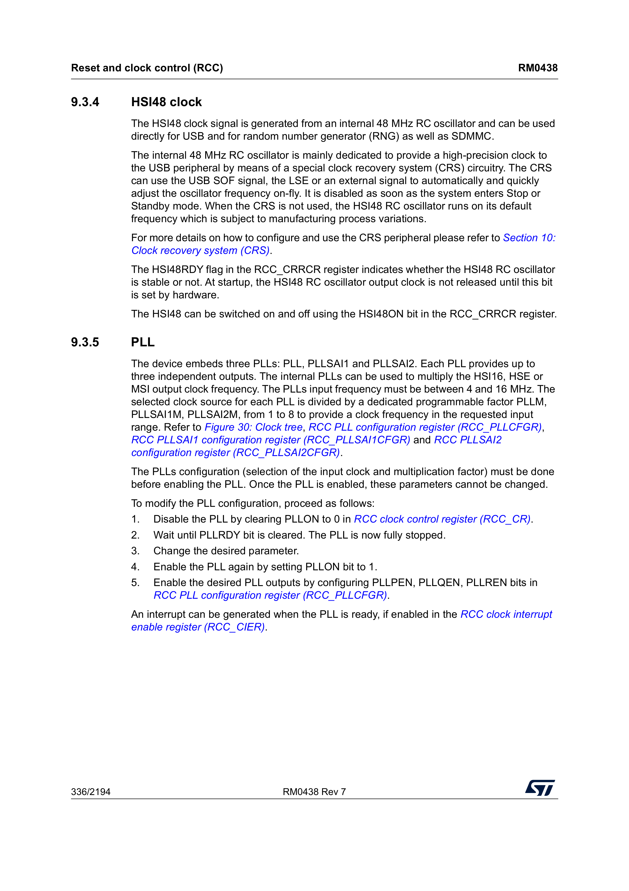
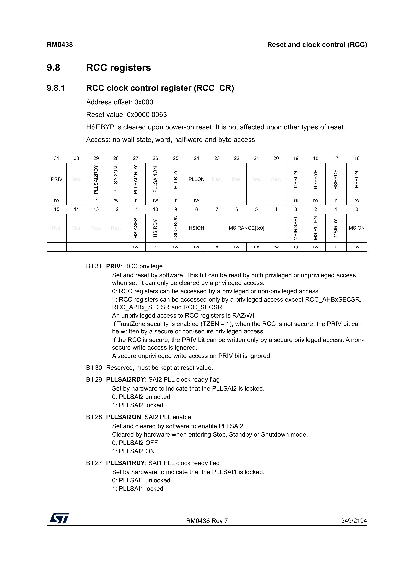
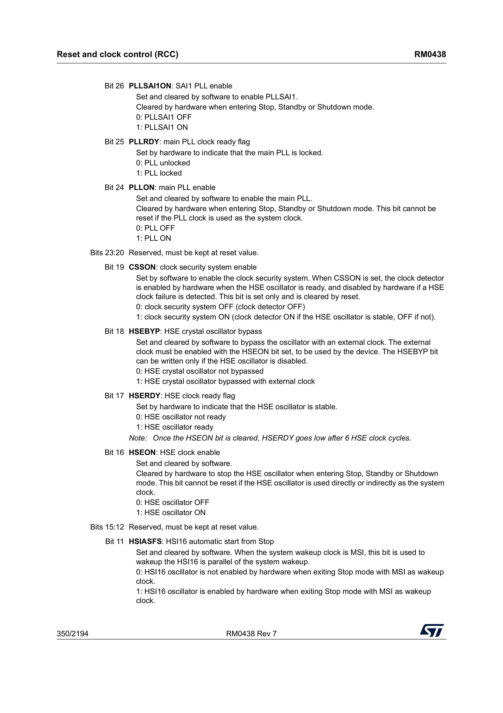
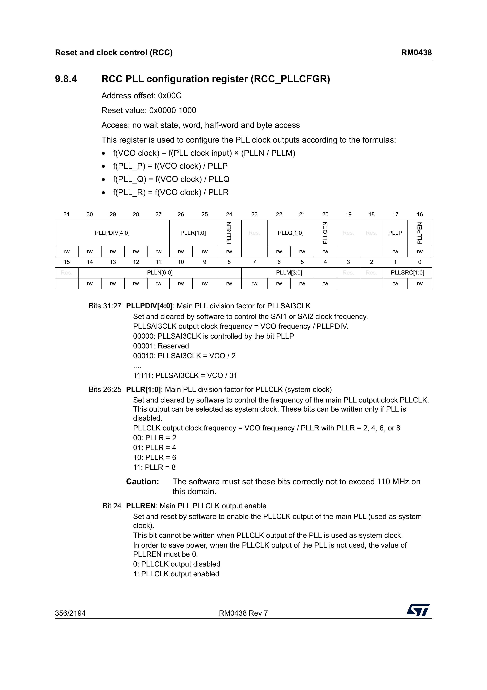
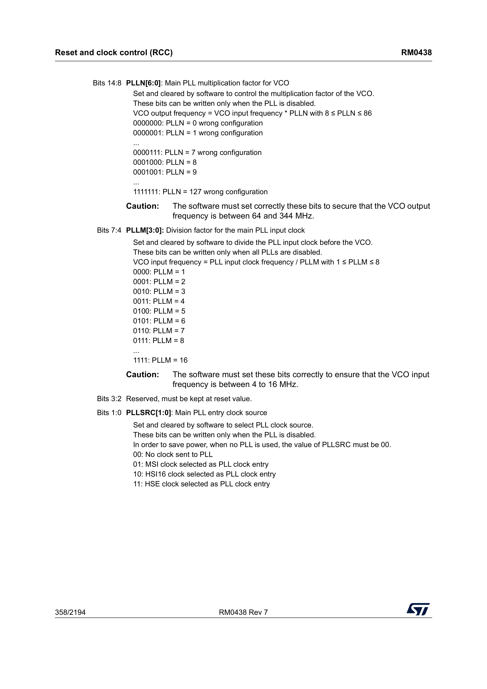
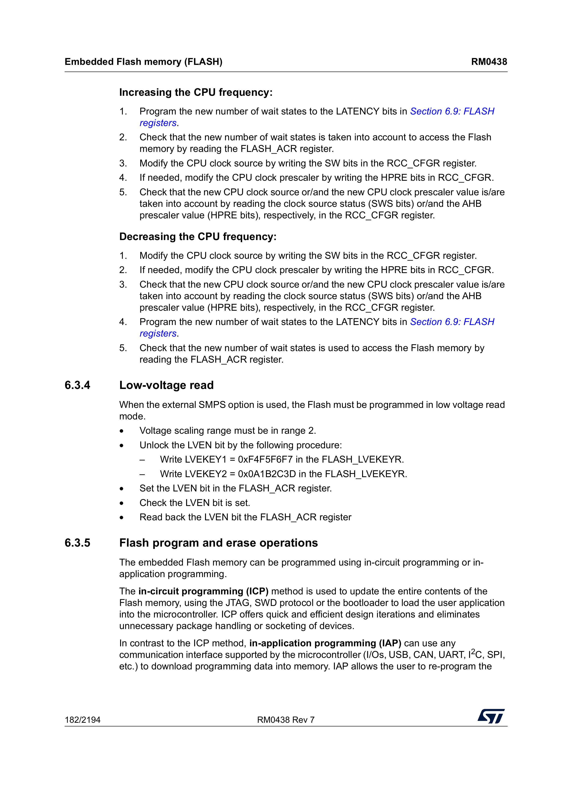
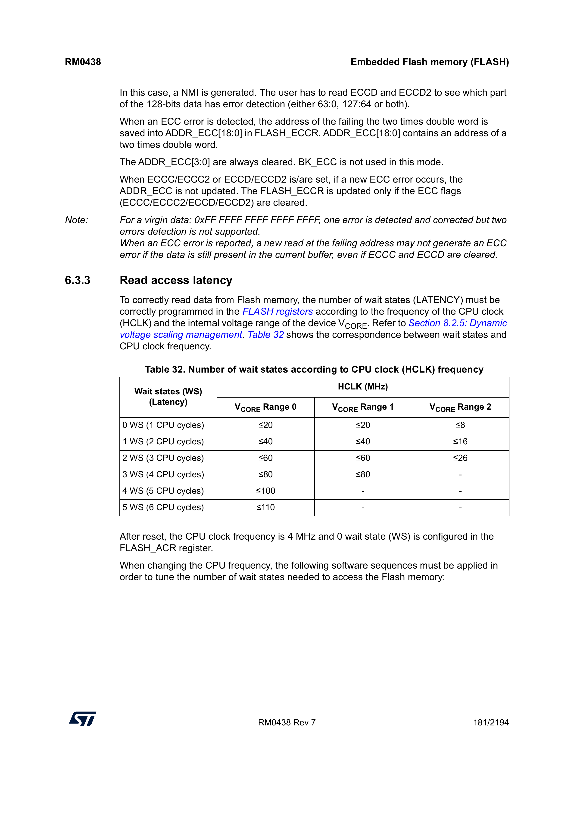
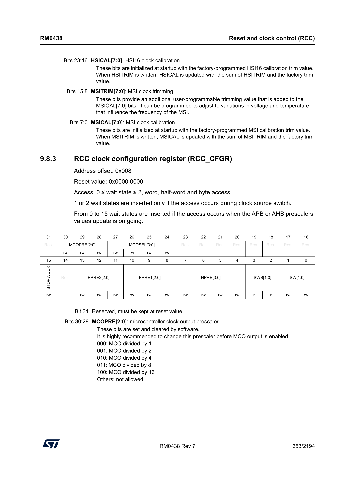
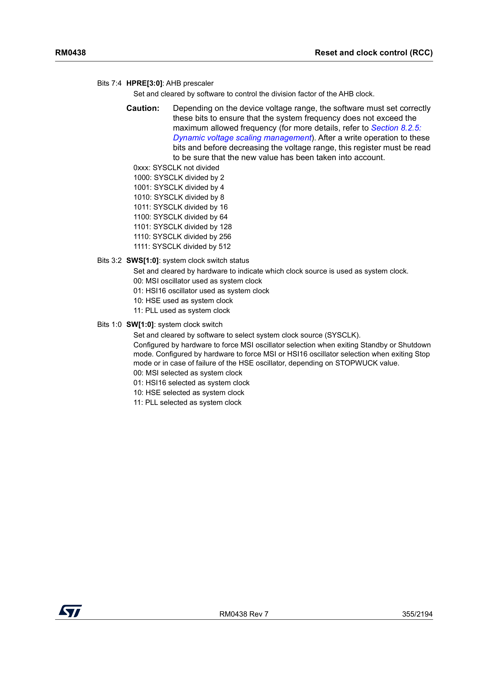

Bare-Metal STM32L552ZEQ Nucleo Programming (Part 2): Configuring the PLL
Introduction
In this post we will program the board’s PLL peripheral to
output a 110 MHz clock, which we will then use as the
system clock. This, naturally, makes our board execute code
faster.
Before reading this content, I suggest you read the first entry in this series of blog posts.
PLL
After reset, the STM32L552ZEQ is clocked by a 4 MHz internal oscillator. By engaging the PLL we can get access to a clock of 110 MHz. After conferring with my mentor in this space (my PhD co-advisor Joel) my understanding is that - Making an oscillator with a low, stable frequency: easy - Making an oscillator with a high, stable frequency: hard
What the PLL does in this case is to run a separate fast oscillator and use feedback to lock the fast oscillator to a multiple of the slow and steady crystal. I won’t go into the details of how it actually works, but I hope that this short explanation is enough to give some intuition. Once the PLL peripheral on our board has been configured, it is producing three different clocks. We can configure the board to use one of these as the system clock.
Figuring out how to do this wasn’t trivial, but in the end I landed on something that worked. The reference manual has quite a clear step-by-step guide for how the PLL should be configured

All but one of the steps are quite straightforward. The third step is where we need to be clever.
Step 1 & 2 - Disabling the PLL and waiting for it to stop
This is done with very few lines of code. The RCC
peripheral is responsible for turning the PLL off. The
step-by-step guide above tells us which register is responsible
for this, RCC->CR.

Looking at the relevant bits, we find the descriptions

The descriptions say that PLLON is set by software
(us), whereas PLLRDY is set by hardware (the board).
We should set the PLLON bit to turn on the PLL, and
then wait until the board sets the PLLRDY bit, so
that we know the PLL has engaged properly.
We write this code to implement step 1 and 2.
if (RCC->CR & RCC_CR_PLLON) {
RCC->CR &= ~RCC_CR_PLLON;
while (RCC->CR & RCC_CR_PLLRDY);
}Step 3 - Configuring the PLL
Before we begin configuring the PLL, we reiterate that we want
to configure our board to run at 110 MHz rather than the 4 MHz it
is running at after reset. The board has three PLL peripherals,
and we want to configure the one simply called PLL. The other two
are PLLSAI1 and PLLSAI2, and I believe they are for audio-related
applications, but I have not bothered using them. The PLL
configuration register that we want to modify is found in the
RCC peripheral, RCC_PLLCFGR.

There are some formulas here, and we will try to break them
down. f is not some magic function, and rather just
means “frequency of”. The VCO clock being mentioned
is the oscillator running inside the PLL, which we will use
feedback to adjust until it is a stable frequency, in relation to
the input clock. Spelling out the first formula in words, it
says
“The frequency of the internal oscillator equals the frequency of the input clock, multiplied by n divided by m”
The three outputs, P, Q, and
R, are then derived by dividing that clock by a
factor. We read from the page above that R is the
output that we can use as the system clock, so we need to pick
N, M, and R such that the
formula equals 110 MHz.
Our input will be the MSI clock, running at 4 MHz (this is the
default configuration after reset). If we pick N = 55
and M = 1, we get
f(VCO clock) = f(PLL clock input) * (55 / 1)
f(VCO clock) = 4000000 * 55
f(VCO clock) = 220000000These values for N and M turn
f(VCO clock) into a 220 MHz clock, and
by picking PLLR to be 2, we get
f(PLL_R) to be 110 MHz, our desired
frequency. The page above shows us that if we write 0
to PLLR, we pick R to be 2.
For fields PLLM and PLLN, we refer to
two pages down in the reference manual

We see that we must write 55 to PLLN,
and 0 to PLLM. Additionally, we see that
the input clock source must get the value 01 in order
to use the MSI clock as its input. The reset value is
00, so this must be changed first.
/* First, we reset every register we intend to configure (writing all 0s to them) */
RCC->PLLCFGR &= ~( RCC_PLLCFGR_PLLSRC
| RCC_PLLCFGR_PLLM
| RCC_PLLCFGR_PLLN
| RCC_PLLCFGR_PLLR);
/* Then, we write out configuration */
RCC->PLLCFGR |= RCC_PLLCFGR_PLLSRC_0
| (0 << RCC_PLLCFGR_PLLM_Pos)
| (55 << RCC_PLLCFGR_PLLN_Pos)
| (0 << RCC_PLLCFGR_PLLR_Pos);This configuration will set the input clock to the
4 MHz MSI clock, and pick our desired values for
N, M, and R, to produce an
output clock of 110 MHz. We have not yet enabled the
output clock, and we cannot do so until we do some additional
configuration.
Step 4 - Enabling the PLL
The fourth step is simply to turn the PLL back on.
RCC->CR |= RCC_CR_PLLON;While omitted from the step-by-step list, it is good to wait
for the PLL to properly start before proceeding. It is not a
requirement, however. We wait for the PLLRDY bit to
be set, rather than cleared.
while (!(RCC->CR & RCC_CR_PLLRDY));Step 5 - Enabling the desired output
The fifth and final step is to enable the specific output(s) we
want the PLL to produce. We only care about the R
output, so we only enable PLLREN.
RCC->PLLCFGR |= RCC_PLLCFGR_PLLREN;The PLL is now fully configured, running, and producing a
110 MHz clock on its R output. The only
thing left to do is to use the PLL as the system clock.
Changing the system clock
Page 182 gives us instructions for how to increase and decrease the system clock. Most notably, before we can tell the board to use the PLL clock, we must change the flash wait states.

Changing flash wait states
This was a gotcha for me, but made sense once I figured it out.
When we go from the default 4 MHz system clock to a
110 MHz one, the board is fetching and executing
instructions from FLASH more than 27.5 times faster than before.
The FLASH cannot deliver them fast enough, so without adding an
artificial delay, the board will throw an error. This
configuration is called flash wait states, and it has to
happen before we switch the system clock over below, or
the CPU starts missing instruction fetches the moment the switch
takes effect. On page 181 of the reference manual, we find this
table.

If we set the system clock to 110 MHz, we must
configure five flash wait states.
/* Set the number of wait states */
FLASH->ACR = (FLASH->ACR & ~FLASH_ACR_LATENCY) | (5 << FLASH_ACR_LATENCY_Pos);
/* Wait for the change to go into effect */
while ((FLASH->ACR & FLASH_ACR_LATENCY) != (5 << FLASH_ACR_LATENCY_Pos));Selecting the system clock
With the PLL running and flash configured for the higher
frequency, we can finally select the PLL as the system clock. This
is, again, not part of the PLL step-by-step guide — it’s a
separate procedure, found by consulting the RCC_CFGR
register.

By programming the SW bits we can say which clock
should be used as the system clock, while the hardware sets the
SWS bits to say what clock is currently being
used as the system clock.

This page tells us that 00 means that it is using
the MSI clock, whereas 11 means that we’re using the
PLL clock. We do the necessary adjustments, and then wait for
SWS to indicate that the PLL is being
used.
RCC->CFGR = (RCC->CFGR & ~RCC_CFGR_SW) | (3U << RCC_CFGR_SW_Pos);
while ((RCC->CFGR & RCC_CFGR_SWS) != RCC_CFGR_SWS);Once our program proceeds past this line, the PLL is properly configured and our board is running at 110 MHz. Amazing! Putting it all together as one procedure, we get
void pll_configure_110mhz(void) {
/* Step 1 & 2 - Disable the PLL and wait for it to stop */
if (RCC->CR & RCC_CR_PLLON) {
RCC->CR &= ~RCC_CR_PLLON;
while (RCC->CR & RCC_CR_PLLRDY);
}
/* Step 3 - Configure the PLL */
RCC->PLLCFGR &= ~( RCC_PLLCFGR_PLLSRC
| RCC_PLLCFGR_PLLM
| RCC_PLLCFGR_PLLN
| RCC_PLLCFGR_PLLR);
RCC->PLLCFGR |= RCC_PLLCFGR_PLLSRC_0
| (0 << RCC_PLLCFGR_PLLM_Pos)
| (55 << RCC_PLLCFGR_PLLN_Pos)
| (0 << RCC_PLLCFGR_PLLR_Pos);
/* Step 4 - Enable the PLL */
RCC->CR |= RCC_CR_PLLON;
while (!(RCC->CR & RCC_CR_PLLRDY));
/* Step 5 - Enable the desired output */
RCC->PLLCFGR |= RCC_PLLCFGR_PLLREN;
/* Set the number of flash wait states before switching the system clock */
FLASH->ACR = (FLASH->ACR & ~FLASH_ACR_LATENCY) | (5 << FLASH_ACR_LATENCY_Pos);
while ((FLASH->ACR & FLASH_ACR_LATENCY) != (5 << FLASH_ACR_LATENCY_Pos));
/* Select the PLL as the system clock */
RCC->CFGR = (RCC->CFGR & ~RCC_CFGR_SW) | (3U << RCC_CFGR_SW_Pos);
while ((RCC->CFGR & RCC_CFGR_SWS) != RCC_CFGR_SWS);
}Updating our application
The application from the previous blog post configured the systick handler and the UART, both with the assumption that the board was running at 4 MHz. When we now configure the board to run at 110 MHz, we need to account for this change. Below is the complete updated application
void main(void) {
pll_configure_110mhz();
SysTick_Config(110000);
configure_lpuart1(110000000, 115200);
__enable_irq();
enable_gpioa();
configure_gpioa();
while(1) {
uart_puts("toggling the LED\r\n");
toggle_led();
systick_delay_ms(500);
}
}This program should blink the LED exactly as before, and output
text over the UART unchanged. If you did not change the
SysTick_Config and configure_lpuart1
parameters, the LED would blink much faster (since the 4000 ticks
are exhausted much faster), and the UART would output garbage.
Final Remarks
The code for this post can be found on my GitHub.
Part 3 is yet to be written, but will be linked here when it is available.